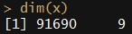

- Introduction to the Challenge
- Look into the Data
- Model Building
- Summary
Amazon Employee Access Challenge
Predict an employee's access needs, given his/her job role
Yibo Chen
Data Scientist @ Supstat Inc
Agenda
Introduction to the Challenge
the story
http://www.kaggle.com/c/amazon-employee-access-challenge
it is all about the access we need to fulfill our daily work.
Introduction to the Challenge
the mission
build an auto-access model based on the historical data
to determine the access privilege
according to the employee's job role and the resource he applied for
Introduction to the Challenge
the data
The data consists of real historical data collected from 2010 & 2011.
Employees are manually allowed or denied access to resources over time.
the files
- train.csv - The training set. Each row has the ACTION (ground truth), RESOURCE, and information about the employee's role at the time of approval
- test.csv - The test set for which predictions should be made. Each row asks whether an employee having the listed characteristics should have access to the listed resource.
Introduction to the Challenge
the variables
| Column Name | Description |
|---|---|
| ACTION | ACTION is 1 if the resource was approved, 0 if the resource was not |
| RESOURCE | An ID for each resource |
| MGR_ID | The EMPLOYEE ID of the manager of the current EMPLOYEE ID record |
| ROLE_ROLLUP_1 | Company role grouping category id 1 (e.g. US Engineering) |
| ROLE_ROLLUP_2 | Company role grouping category id 2 (e.g. US Retail) |
| ROLE_DEPTNAME | Company role department description (e.g. Retail) |
| ROLE_TITLE | Company role business title description (e.g. Senior Engineering Retail Manager) |
| ROLE_FAMILY_DESC | Company role family extended description (e.g. Retail Manager, Software Engineering) |
| ROLE_FAMILY | Company role family description (e.g. Retail Manager) |
| ROLE_CODE | Company role code; this code is unique to each role (e.g. Manager) |
Introduction to the Challenge
the metric
AUC(area under the ROC curve)
- is a metric used to judge predictions in binary response (0/1) problem
- is only sensitive to the order determined by the predictions and not their magnitudes
- package
verificationorROCRin R
Introduction to the Challenge
the metric
(t <- data.frame(true_label=c(0,0,0,0,1,1,1,1),
predict_1=c(1,2,3,4,5,6,7,8),
predict_2=c(1,2,3,6,5,4,7,8),
predict_3=c(1,7,6,4,5,3,2,8)))
## true_label predict_1 predict_2 predict_3
## 1 0 1 1 1
## 2 0 2 2 7
## 3 0 3 3 6
## 4 0 4 6 4
## 5 1 5 5 5
## 6 1 6 4 3
## 7 1 7 7 2
## 8 1 8 8 8
Introduction to the Challenge
the metric
data.frame(true_label=t$true_label,
predict_2=t$predict_2,
predict_label=(t$predict_2>=6))
## true_label predict_2 predict_label
## 1 0 1 FALSE
## 2 0 2 FALSE
## 3 0 3 FALSE
## 4 0 6 TRUE
## 5 1 5 FALSE
## 6 1 4 FALSE
## 7 1 7 TRUE
## 8 1 8 TRUE
table(t$predict_2>=6,t$true_label)
##
## 0 1
## FALSE 3 2
## TRUE 1 2
1:4
0:4
TP:2
FP:1
TPR=TP/1=0.5
FPR=FP/0=0.25
Introduction to the Challenge
the metric
data.frame(true_label=t$true_label,
predict_2=t$predict_2,
predict_label=(t$predict_2>=5))
## true_label predict_2 predict_label
## 1 0 1 FALSE
## 2 0 2 FALSE
## 3 0 3 FALSE
## 4 0 6 TRUE
## 5 1 5 TRUE
## 6 1 4 FALSE
## 7 1 7 TRUE
## 8 1 8 TRUE
table(t$predict_2>=5,t$true_label)
##
## 0 1
## FALSE 3 1
## TRUE 1 3
1:4
0:4
TP:3
FP:1
TPR=TP/1=0.75
FPR=FP/0=0.25
Introduction to the Challenge
the metric
Introduction to the Challenge
the metric
require(ROCR,quietly=T)
pred <- prediction(t$predict_1,t$true_label)
performance(pred,"auc")@y.values[[1]]
## [1] 1
require(verification,quietly=T)
roc.area(t$true_label,t$predict_1)$A
## [1] 1
pred <- prediction(t$predict_1,t$true_label)
perf <- performance(pred,"tpr","fpr")
plot(perf,col=2,lwd=3)
Introduction to the Challenge
the metric
pred <- prediction(t$predict_2,t$true_label)
performance(pred,"auc")@y.values[[1]]
## [1] 0.875
roc.area(t$true_label,t$predict_2)$A
## [1] 0.875
pred <- prediction(t$predict_2,t$true_label)
perf <- performance(pred,"tpr","fpr")
plot(perf,col=2,lwd=3)

Introduction to the Challenge
the metric
pred <- prediction(t$predict_3,t$true_label)
performance(pred,"auc")@y.values[[1]]
## [1] 0.5
roc.area(t$true_label,t$predict_3)$A
## [1] 0.5
pred <- prediction(t$predict_3,t$true_label)
perf <- performance(pred,"tpr","fpr")
plot(perf,col=2,lwd=3)
Look into the Data
load data from files

Look into the Data
the target
table(y,useNA="ifany")
## y
## 0 1 <NA>
## 1897 30872 58921
Look into the Data
the predictor
Look into the Data
treat the features as Categorical or Numerical?
sapply(x,function(z){length(unique(z))})
## resource mgr_id role_rollup_1 role_rollup_2
## 7518 4913 130 183
## role_deptname role_title role_family_desc role_family
## 476 361 2951 68
## role_code
## 361
Look into the Data
par(mar=c(5,4,0,2))
plot(x$role_title,x$role_code)
Look into the Data
length(unique(x$role_title))
## [1] 361
length(unique(x$role_code))
## [1] 361
length(unique(paste(x$role_code,x$role_title)))
## [1] 361
Look into the Data
x <- x[,names(x) != "role_code"]
sapply(x,function(z){length(unique(z))})
## resource mgr_id role_rollup_1 role_rollup_2
## 7518 4913 130 183
## role_deptname role_title role_family_desc role_family
## 476 361 2951 68
Look into the Data
check the distribution - role_family_desc
hist(train$role_family_desc,breaks=100)
hist(test$role_family_desc,breaks=100)
Look into the Data
check the distribution - resource
hist(train$resource,breaks=100)
hist(test$resource,breaks=100)

Look into the Data
check the distribution - mgr_id
hist(train$mgr_id,breaks=100)
hist(test$mgr_id,breaks=100)
Look into the Data
treat the features as Categorical or Numerical?
YetiMan shared his findings in the forum:
- 1) My analyses so far leads me to believe that there is "information" in some of the categorical labels themselves. My hunch is that they imply some sort of chronology, but I can't be certain.
- 2) Just for fun I increased the max classes for R's gbm package to 8192 and built a model (using plain vanilla training data). The leader board result was 0.87 - slightly worse than the all-numeric gbm. Food for thought.
Look into the Data
our approach
- treat all features as Categorical
- treat all features as Numerical
- treat
mgr_idas Numerical, the others as Categorical
Model Building
workflow
- Feature Extraction
- Base Learners
- Ensemble
Model Building
workflow
Model Building
Feature Extraction
- the raw features(as numerical)
- the raw features(as categorical) with level reduction
- the dummies(in sparse Matrix)
- the dummies including the interaction
- some derived variables(count & ratio)
Model Building
1. the raw features(as numerical)
Model Building
2. the raw features(as categorical) with level reduction
2.1 choose the top frequency categories
for(i in 1:ncol(x)){
the_labels <- names(sort(table(x[,i]),decreasing=T)[1:2])
x[!x[,i] %in% the_labels,i] <- "other"
}
| var_raw | frequency | var_with_level_reduction |
|---|---|---|
| a | 3 | a |
| a | 3 | a |
| a | 3 | a |
| b | 2 | b |
| b | 2 | b |
| c | 1 | other |
| d | 1 | other |
Model Building
2. the raw features(as categorical) with level reduction
2.2 use Pearson's Chi-squared Test
table(y$y,ifelse(x$mgr_id == 770,"mgr_770","mgr_not_770"))
##
## mgr_770 mgr_not_770
## 0 5 1892
## 1 147 30725
chisq.test(y$y,ifelse(x$mgr_id == 770,"mgr_770","mgr_not_770"))$p.value
## [1] 0.2507353
Model Building
3. the dummies(in sparse Matrix)
| id | var | var_a | var_b | var_c |
|---|---|---|---|---|
| 1 | a | 1 | 0 | 0 |
| 2 | a | 1 | 0 | 0 |
| 3 | a | 1 | 0 | 0 |
| 4 | b | 0 | 1 | 0 |
| 5 | c | 0 | 0 | 1 |
Model Building
3. the dummies(in sparse Matrix)
use package Matrix to create the dummies
require(Matrix)
set.seed(114)
Matrix(sample(c(0,1),40,re=T,prob=c(0.6,0.1)),nrow=5)
## 5 x 8 sparse Matrix of class "dgCMatrix"
##
## [1,] . . . 1 . . . 1
## [2,] . 1 . . . . 1 .
## [3,] 1 . . . . . . .
## [4,] . . . . . 1 . .
## [5,] . . . . . . . .
Model Building
4. the dummies including the interaction
| id | m | n | mn_ap | mn_aq | mn_bp | mn_bq |
|---|---|---|---|---|---|---|
| 1 | a | p | 1 | 0 | 0 | 0 |
| 2 | a | p | 1 | 0 | 0 | 0 |
| 3 | a | q | 0 | 1 | 0 | 0 |
| 4 | b | p | 0 | 0 | 1 | 0 |
| 5 | b | q | 0 | 0 | 0 | 1 |
Model Building
5. some derived variables(count & ratio)
- the frequency of every category
- the frequency of the interactions
- the proportion
Model Building
5. some derived variables(count & ratio)
tmp1 <- cnt_1[114:117,c("c1_resource","c1_role_deptname")]
tmp2 <- cnt_2[114:117,c("c2_resource_role_deptname_cnt_ij",
"c2_resource_role_deptname_ratio_i",
"c2_resource_role_deptname_ratio_j")]
cbind(tmp1,tmp2)
## c1_resource c1_role_deptname c2_resource_role_deptname_cnt_ij
## 114 1 1645 1
## 115 36 1312 4
## 116 45 465 24
## 117 374 2377 169
## c2_resource_role_deptname_ratio_i c2_resource_role_deptname_ratio_j
## 114 1.0000000 0.0006079027
## 115 0.1111111 0.0030487805
## 116 0.5333333 0.0516129032
## 117 0.4518717 0.0710980227
Model Building
Base Learners
- Regularized Generalized Linear Model
- Support Vector Machine
- Random Forest
- Gradient Boosting Machine
Model Building
Ensemble
- mean prediction of all models
- two-stage stacking
- based on 5-fold cv holdout predictions
Model Building
Ensemble
- mean prediction of all models
- two-stage stacking
- based on 5-fold cv holdout predictions
- algorithms in level-1(Regularized Generalized Linear Model & Gradient Boosting Machine)
- algorithms in level-2(Regularized Generalized Linear Model)
Model Building
1. Regularized Generalized Linear Model
- generalized linear model(glm)
- convex penalties
Model Building
1. Regularized Generalized Linear Model
- logistic regression
x <- sort(rnorm(100))
set.seed(114)
y <- c(sample(x=c(0,1),size=30,prob=c(0.9,0.1),re=T),
sample(x=c(0,1),size=20,prob=c(0.7,0.3),re=T),
sample(x=c(0,1),size=20,prob=c(0.3,0.7),re=T),
sample(x=c(0,1),size=30,prob=c(0.1,0.9),re=T))
m1 <- lm(y~x)
m2 <- glm(y~x,family=binomial(link=logit))
y2 <- predict(m2,data=x,type="response")
par(mar=c(5,4,0,0))
plot(y~x);abline(m1,lwd=3,col=2)
points(x,y2,type="l",lwd=3,col=3)
Model Building
1. Regularized Generalized Linear Model
- logistic regression
- convex penalties
Model Building
1. Regularized Generalized Linear Model
- convex penalties
- L1 (lasso)
- L2 (ridge regression)
- mixture of L1&L2 (elastic net)
Model Building
1. Regularized Generalized Linear Model
- the dummies(in sparse Matrix)
the dummies including the interaction
R package:
glmnet
Model Building
2. Support Vector Machine(just for Diversity)
Model Building
2. Support Vector Machine(just for Diversity)
Model Building
2. Support Vector Machine(just for Diversity)
Model Building
2. Support Vector Machine(just for Diversity)
- the dummies including the interaction
some derived variables(count & ratio)
R package:
kernlab,e1071
Model Building
decision tree
Model Building
3. Random Forest
decision trees + bagging
Model Building
3. Random Forest
- the raw features(as numerical)
- the raw features(as categorical) with level reduction
some derived variables(count & ratio)
R package:
randomForest
Model Building
4. Gradient Boosting Machine
decision trees + boosting
Model Building
4. Gradient Boosting Machine
- the raw features(as numerical)
- the raw features(as categorical) with level reduction
some derived variables(count & ratio)
R package:
gbm
Model Building
final score
Summary
some insights
| Variable Name | rel.inf |
|---|---|
| cnt2_resource_role_deptname_cnt_ij | 2.542974017 |
| cnt2_resource_role_rollup_2_ratio_i | 2.107624216 |
| cnt2_resource_role_deptname_ratio_j | 2.017153645 |
| cnt2_resource_role_rollup_2_ratio_j | 1.910465811 |
| cnt2_resource_role_family_ratio_i | 1.770737494 |
| ... | ... |
| cnt4_resource_mgr_id_role_rollup_2_role_family_desc | 0.008938286 |
| cnt4_resource_role_rollup_1_role_rollup_2_role_title | 0.008930661 |
| cnt4_resource_mgr_id_role_rollup_1_role_family_desc | 0.002106958 |
Summary
some insights
summary(x[,c("cnt2_resource_role_deptname_cnt_ij",
"cnt2_resource_role_deptname_ratio_j")])
## cnt2_resource_role_deptname_cnt_ij cnt2_resource_role_deptname_ratio_j
## Min. : 1.00 Min. :0.0002945
## 1st Qu.: 2.00 1st Qu.:0.0061444
## Median : 7.00 Median :0.0171569
## Mean : 15.55 Mean :0.0315289
## 3rd Qu.: 17.00 3rd Qu.:0.0368098
## Max. :201.00 Max. :1.0000000
Summary
some insights
xx <- x[,"cnt2_resource_role_deptname_cnt_ij"]
tt <- t.test(xx ~ y)
list(estimate=tt$estimate,
conf.int=tt$conf.int,p.value=tt$p.value)
## $estimate
## mean in group 0 mean in group 1
## 10.03901 13.81948
##
## $conf.int
## [1] -4.851434 -2.709509
## attr(,"conf.level")
## [1] 0.95
##
## $p.value
## [1] 5.83816e-12
par(mar=c(5,4,2,2))
boxplot(xx ~ y)
Summary
some insights
xxx <- cut(xx,include.lowest=T,
breaks=c(0,1,3,7,14,30,300))
par(mar=c(5,2,0,0))
barplot(table(xxx))
tb <- table(y,xxx)
r_0 <- tb[1,] / colSums(tb)
par(mar=c(5,2,0,0))
plot(r_0,type="l",lwd=3)
Summary
some insights
xx <- x[,"cnt2_resource_role_deptname_ratio_j"]
tt <- t.test(xx ~ y)
list(estimate=tt$estimate,
conf.int=tt$conf.int,p.value=tt$p.value)
## $estimate
## mean in group 0 mean in group 1
## 0.01954803 0.02901646
##
## $conf.int
## [1] -0.011731509 -0.007205341
## attr(,"conf.level")
## [1] 0.95
##
## $p.value
## [1] 3.930315e-16
par(mar=c(5,4,2,2))
boxplot(xx ~ y)
Summary
some insights
xxx <- cut(xx,include.lowest=T,
breaks=quantile(xx,seq(0,1,0.2)))
par(mar=c(5,2,0,0))
barplot(table(xxx))
tb <- table(y,xxx)
r_0 <- tb[1,] / colSums(tb)
par(mar=c(5,2,0,0))
plot(r_0,type="l",lwd=3)
Summary
overfitting
| model | auc_cv | auc_public | auc_private |
|---|---|---|---|
| num_glmnet_0 | 0.8985069 | 0.87737 | 0.87385 |
| stacking_gbm_with_the_glmnet | 0.9277316 | 0.90695 | 0.90478 |
Summary
overfitting
| model | auc_cv | auc_public | auc_private |
|---|---|---|---|
| num_glmnet_0 | 0.8985069 | 0.87737 | 0.87385 |
| stacking_gbm_with_the_glmnet | 0.9277316 | 0.90695 | 0.90478 |
| stacking_gbm_without_the_glmnet | 0.9182303 | 0.91529 | 0.91130 |
Summary
overfitting
Winning solution code and methodology
http://www.kaggle.com/c/amazon-employee-access-challenge/forums/t/5283/winning-solution-code-and-methodology
Summary
useful discussions
Python code to achieve 0.90 AUC with Logistic Regression
http://www.kaggle.com/c/amazon-employee-access-challenge/forums/t/4838/python-code-to-achieve-0-90-auc-with-logistic-regression
Starter code in python with scikit-learn (AUC .885)
http://www.kaggle.com/c/amazon-employee-access-challenge/forums/t/4797/starter-code-in-python-with-scikit-learn-auc-885
Patterns in Training data set
http://www.kaggle.com/c/amazon-employee-access-challenge/forums/t/4886/patterns-in-training-data-set